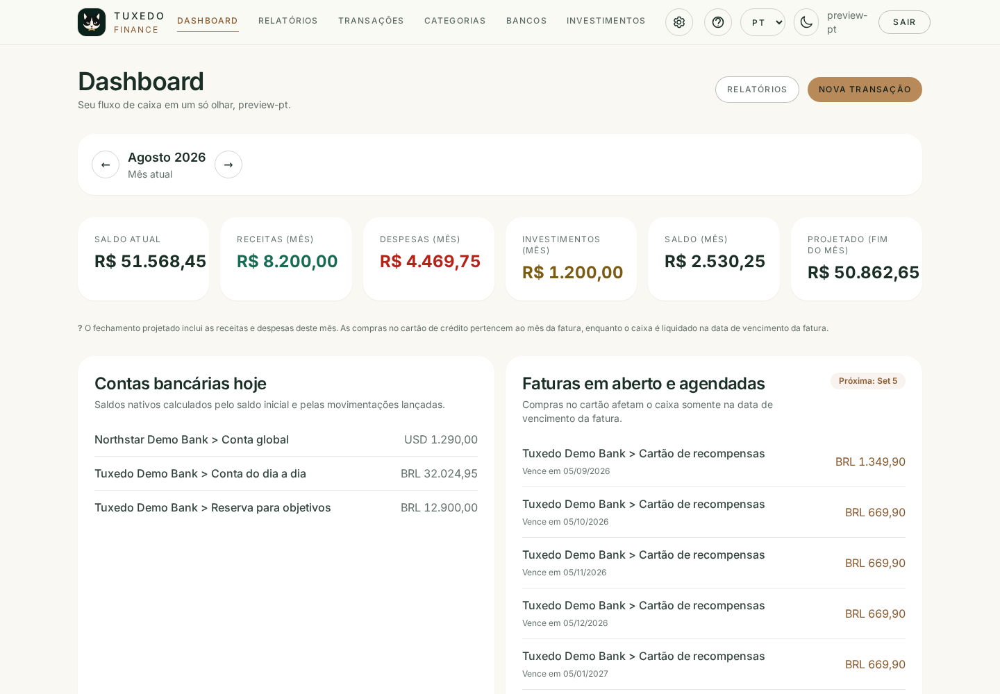
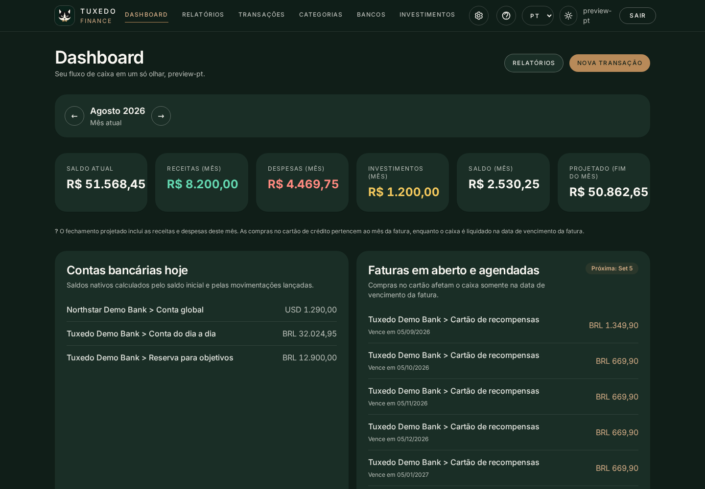
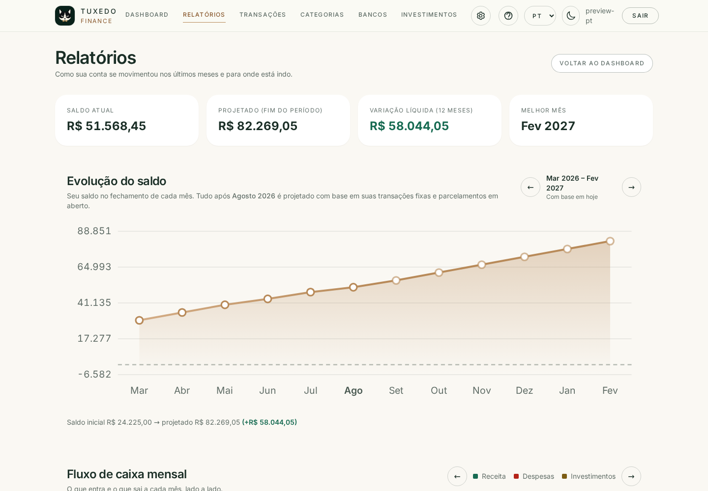
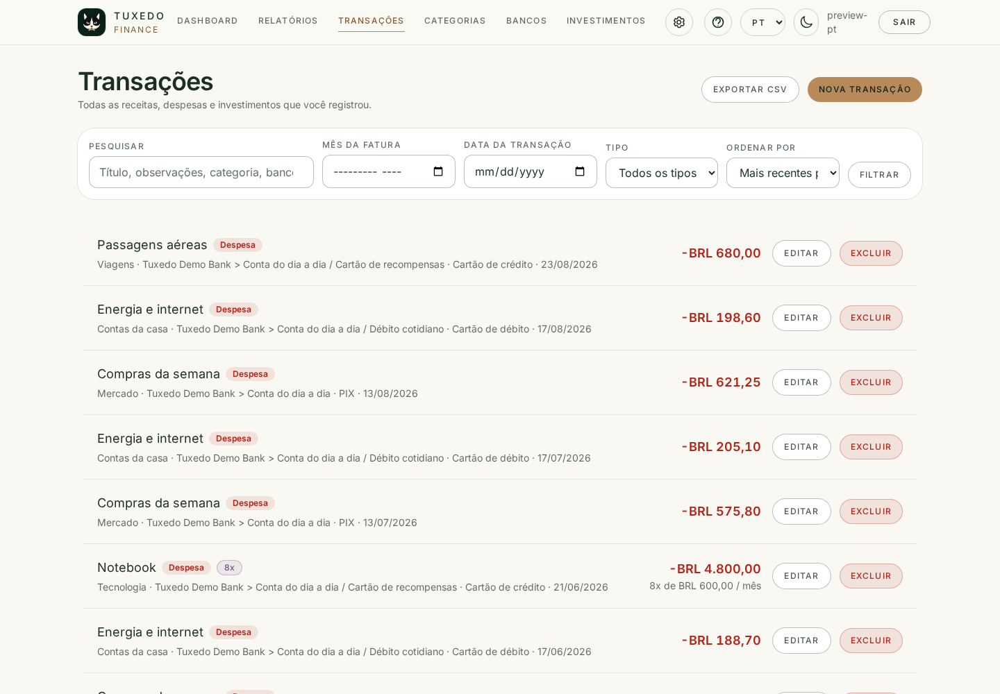
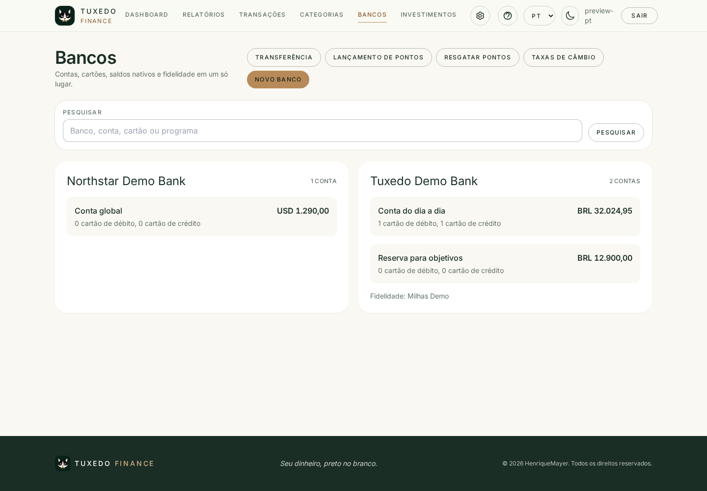
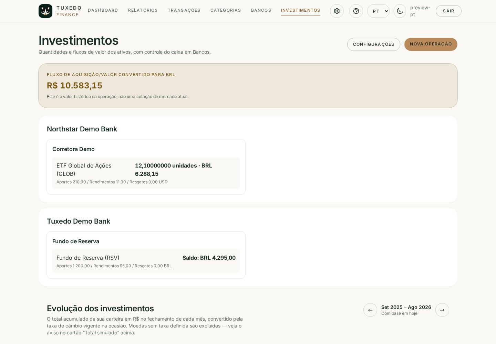

Prévia da interface
Conheça suas finanças além da planilha.
Explore a interface real do Tuxedo Finance antes de instalar. Este tour apresenta fluxo de caixa, projeções, relatórios, transações cotidianas, bancos e investimentos.
O caixa de hoje e o restante do mês.
Saldo Atual representa o caixa realizado nas contas. Os cartões do mês separam receitas, despesas e investimentos, enquanto Projetado mostra o fechamento esperado.
{kind=link}

{kind=link}

Padrões sempre ligados aos números.
Gráficos renderizados no servidor comparam evolução do saldo, fluxo de caixa, instrumentos, categorias, parcelas e despesas recorrentes sem esconder os valores de origem.

Cada evento classificado e pesquisável.
Receitas e despesas preservam categoria, instrumento de pagamento, recorrência, parcelamento, data da transação e mês de cobrança.

Contas, cartões e moedas em contexto.
Bancos agrupam contas por moeda, saldos nativos, cartões, ciclos de fatura, transferências, fidelidade e taxas de câmbio.

Um ledger separado para os fluxos da posição.
Aportes, retiradas e rendimentos manuais preservam quantidades, preços unitários, taxas, contas de caixa e evidências históricas de conversão.
